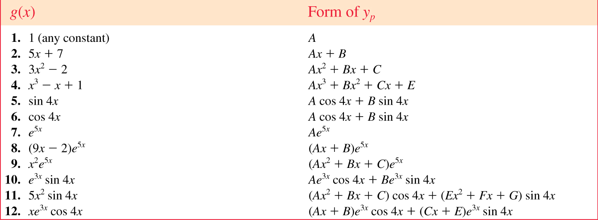

from sympy import Symbol, init_printing
from sympy.solvers import solve
init_printing()
x = Symbol('x')
solve(3*x**3 +5*x**2 +10*x -4, x)\(\displaystyle \left[ \frac{1}{3}, \ -1 - \sqrt{3} i, \ -1 + \sqrt{3} i\right]\)
In an initial-value problem (IVP), \(\,\) we seek a solution \(y(x)\) of a \(n\)th order linear DE so that \(y(x)\) satisfies initial conditions at \(x_0\)
\(n\)th order linear DE: \(\;a_n(x) \neq 0\)
\[\underbrace{a_n(x) \frac{d^ny}{dx^n} +a_{n-1}(x) \frac{d^{n-1}y}{dx^{n-1}} +\cdots + a_1(x) \frac{dy}{dx} +a_0(x) y}_{L(y): ~\mathrm{Linear\;Operator}}= g(x) \]
Initial conditions
\[y(x_0) = y_0, \; y'(x_0) = y_1, \cdots, \; y^{(n-1)}(x_0) = y_{n-1}\]
Boundary-value problem (BVP) consists of solving a linear DE of order 2 or greater, in which the dependent variable \(y\) or its derivatives are specified at different points
For example,
\[a_2(x) \frac{d^2y}{dx^2} +a_1(x) \frac{dy}{dx} +a_0(x)y=g(x)\]
Boundary conditions
\[y(x_0)=y_0, \;y(x_1)=y_1\]
The sum, or superposition , of two or more solutions of a homogeneous linear DE is also a solution
Any set of \(n\) linearly independent solutions \(y_1, y_2, \cdots, y_n\) of the \(n\)th order homogeneous linear DE on interval \(~I\) is a fundamental set of solutions
If two functions are linearly dependent, then one is a constant multiple of the other (otherwise, they are linearly independent)
If \(\{y_1, y_2, \cdots, y_n\}\) are a set of linearly independent functions, the Wronskian function is not singular:
\[ W(y_1, y_2, \cdots, y_n)= \begin{vmatrix} y_1 & y_2 & \cdots & y_n \\ y_1' & y_2' & \cdots & y_n'\\ \vdots & \vdots & \ddots & \vdots\\ y_1^{(n-1)} & y_2^{(n-1)} & \cdots & y_n^{(n-1)} \end{vmatrix} \neq 0 \]
General solution of \(~n\)th order homogeneous linear DE is
\[y(x)=c_1 y_1(x) +c_2 y_2(x) + \cdots + c_n y_n(x)\]
where \(\,y_1, y_2, \cdots, y_n\,\) is a fundamental set of solutions and \(c_i, \;i=1,2,\cdots,n\;\) are arbitrary constants
General solution of \(n\)th order nonhomogeneous linear DE is
\[y(x)=c_1 y_1(x) +c_2 y_2(x) + \cdots + c_n y_n(x) +y_p(x)\]
where \(\,y_1, y_2, \cdots, y_n\,\) is a fundamental set of solutions, \(\,y_p\) is a particular solution, and \(\,c_i, \;i=1,2,\cdots,n\;\) are arbitrary constants
\(~\)
Example \(\,\) Given that \(\,x(t)=c_1\cos\omega t +c_2 \sin\omega t~\) is the general solution of \(x''+\omega^2x=0~\) on the interval \((-\infty,\infty)\), \(\,\) show that a solution satisfying the initial conditions \(x(0)=x_0\), \(x'(0)=x_1\), is given by
\[x(t)=x_0\cos\omega t+\frac{x_1}{\omega} \sin\omega t\]
Example \(\,\) Determine whether the given set of functions is linearly dependent or linearly independent on the interval \((-\infty,\infty)\)
\[f_1(x)=x, ~f_2(x)=x^2, ~f_3(x)=4x-3x^2\]
\[f_1(x)=5, ~f_2(x)=\cos^2 x, ~f_3(x)=\sin^2 x\]
Example \(\,\) Verify that the given functions form a fundamental set of solutions of the differential equation on the indicated interval. Form the general solution of the equation
\[y''-y'-12y=0; \;\; e^{-3x}, \; e^{4x}, \;\;(-\infty,\infty)\]
\[y''-2y'+5y=0; \;\;e^x \cos 2x, \;\; e^x\sin 2x, \;\;(-\infty,\infty)\]
Example \(\,\) Verify that the given two-parameter family of functions is the general solution of the nonhomogeneous differential equation on the indicated interval
\[y''-7y'+10y=24e^x; \;\;y=c_1 e^{2x} +c_2 e^{5x} +6e^x; \;\;(-\infty,\infty)\]
\[y''-4y'+4y=2e^{2x} +4x-12; \;\;y=c_1 e^{2x} +c_2 xe^{2x} +x^2e^{2x} +x -2; \;\;(-\infty,\infty)\]
Reduction of order can be used to reduce a linear second-order DE with known solution \(y_1\) into a linear first-order DE, which can be solved for a second solution \(y_2\)
Applying reduction of order \(y_2 = u(x) y_1\) to the standard form of a second-order linear homogeneous DE
\[y''+P(x)y' +Q(x)y=0\]
gives
\[ \begin{aligned} y_1 u'' & +\left(2y_1' +P(x)y_1\right) u' = 0\\ &\Downarrow \;{\scriptsize\times\, y_1, \; u'=w}\\ (y_1^2 w)' &= -(y_1^2 w) P(x) \\ &\Downarrow \\ \color{red}{y_2(x)} &\color{red}{= y_1(x) {\LARGE\int} {\small\frac{\exp\left(-{\displaystyle\int} P(x) \,dx \right)}{y_1^2(x)} \,dx}} \end{aligned}\]
Example \(\,\) The indicated function \(y_1(x)\) is a solution of the given equation. Use the reduction of order to find a second solution \(y_2(x)\)
\(y'' -4y' +4y=0; \;\;y_1=e^{2x}\)
\(y''+16y=0; \;\; y_1=\cos 4x\)
\(y''-y=0; \;\; y_1=\cosh x\)
Example \(\,\) The indicated function \(y_1(x)\) is a solution of the associated homogeneous equation. Use the reduction of order to find a second solution \(y_2(x)\) of homogeneous equation and a particular solution \(y_p(x)\) of the given nonhomogeneous equation
\[y''-4y=2; \;\;y_1=e^{-2x}\]
The general solution of \(ay''+by'+cy=0\,\) is found by substituting \(\,y=e^{\,px}\) and solving the resulting characteristic equation \(\,ap^2+bp+c=0\,\) for roots \(\color{red}{p_1}\) and \(\color{red}{p_2}\)
Case I \(~\) \(p_1\) and \(\,p_2\) are real and distinct
\[y = c_1 {\color{red}{e^{\,p_1 x}}} +c_2 {\color{red}{e^{\,p_2 x}}}\]
Case II \(~\) \(p_1\) and \(\,p_2\) are real and equal
\[y=c_1 {\color{red}{e^{\,p_1x}}} +c_2 \color{red}{x e^{\,p_1 x}}\]
Case III \(~\) \(p_1\) and \(\,p_2\) are complex conjugate: \(~p_1, p_2 = \color{red}{\alpha} \pm i\color{red}{\beta}\)
\[y={\color{red}{e^{\alpha x}}} \left(c_1 {\color{red}{\cos\beta x}} +c_2 {\color{red}{\sin\beta x}} \right)\]
\(~\)
Example \(\,\) Solve \(~y'' +\omega^2y=0\,\) and \(\,y'' -\omega^2y=0\)
\(~\)
Example \(\,\) Solve \(~3y'''+5y''+10y'-4y=0\)
from sympy import Symbol, init_printing
from sympy.solvers import solve
init_printing()
x = Symbol('x')
solve(3*x**3 +5*x**2 +10*x -4, x)\(\displaystyle \left[ \frac{1}{3}, \ -1 - \sqrt{3} i, \ -1 + \sqrt{3} i\right]\)
\(~\)
Example \(\,\) Find the general solution of the given second-order differential equation
\(4y'' +y'=0\)
\(y''-y'-6y=0\)
\(y'' +8y' +16y=0\)
\(~\)
Example \(\,\) Find the general solution of the given higher-order differential equation
\(y''' -4y'' -5y'=0\)
\(y''' -5y'' +3y' +9y=0\)
\(~\)
Example \(\,\) Solve the initial-value problem
\(y''' +12y'' +36y'=0, \;\;y(0)=0, \;y'(0)=1, \; y''(0)=-7\)
\(~\)
Method of undetermined coefficients can be used to obtain a particular solution \(y_p\)
The underlying idea is a conjecture about the form of \(y_p\) based on the kinds of functions making up the input function \(g(x)\)
Limited to nonhomogeneous linear DEs where
There are models of \(y_p\) for various functions

Finally, the general solution is obtained from the superposition of \(y_h\) and \(y_p\)
\(~\)
Example \(\,\) Solve \(~y'' +4y = x\cos x\)
\(~\)
If \(g(x)\) consists of a sum of, say, \(m\) terms of the kind listed in the table, \(~\)then the assumption for a particular solution \(y_p\) consists of the sum of the trial forms
If \(\,y_p\) contains terms that duplicate terms in \(y_h\), \(\,\)then that \(y_p\) must be multiplied by \(x^n\), \(~\)where \(n\) is the smallest positive integer that eliminate that duplication
\(~\)
Example \(\,\) Solve \(~y'' -6y' +9y = 6x^2 +2 -12e^{3x}\)
\(~\)
Example \(\,\) Solve \(~y^{(4)}+y'''= 1 -x^2e^{-x}\)
\(~\)
Example \(\,\) Solve the given differential equation by undetermined coefficients
\(y'' +2y' +y=\sin x +3 \cos 2x\)
\(y'' +2y' -24y=16 - (x+2)e^{4x}\)
\(y''' -6y''=3-\cos x\)
\(~\)
Example \(\,\) Solve the given initial-value problem
\(y'' +4y=-2, \;\;y(\pi/8)=1/2, \;\;y'(\pi/8) = 2\)
\(5y'' +y'=-6x, \;\;y(0)=0, \; y'(0)=-10\)
\(\displaystyle \frac{d^2 x}{dt^2} +\omega^2x=F_0 \sin\omega t, \;\; x(0)=0, \;x'(0)=0\)
\(~\)
The method of variation of parameters can be used with linear higher-order DEs
This method always yields a \(y_p\) provided the homogeneous equation can be solved
This method is not limited to the types of input functions constraining the method of undetermined coefficients
To adapt the method of variation of parameters to a linear second-order DE
\[a_2(x)y'' +a_1(x)y' +a_0(x)y = g(x),\]
we put the above equation in the standard form
\[y'' +P(x)y' +Q(x)y = f(x)\] To solve,
Find the homogeneous solutions \(y_1\), \(y_2\)
Seek a particular solution of the form
\[y_p = \color{red}{u_1(x)} \color{blue}{y_1} +\color{red}{u_2(x)} \color{blue}{y_2}\]
\(~\)
\[ \begin{aligned} y_p''+P(x)y_p' &+Q(x)y_p = f(x)\\ &{\Big\Downarrow} \; {\small y_p = u_1 y_1 +u_2 y_2} \\ \frac{d}{dx}[\color{blue}{y_1 u_1' +y_2 u_2'}] +P(x) [\color{blue}{y_1 u_1' +y_2 u_2'}] &+\color{red}{y_1' u_1'} +\color{red}{y_2' u_2'}= f(x) \\ {\small\text{let } y_1 u_1' +y_2 u_2' =0,}\; &{\Big\Downarrow} \; {\small\text{then } y_1' u_1' +y_2' u_2'= f(x)} \\ \color{red}{\begin{bmatrix} y_1 & y_2\\ y_1' & y_2' \end{bmatrix} \begin{bmatrix} u_1' \\ u_2' \end{bmatrix}} &= \color{red}{\begin{bmatrix} 0 \\ f(x) \end{bmatrix}} \\ &\Downarrow \\ \qquad\quad\color{blue}{u_1 = \displaystyle\int \frac{W_1}{W\;} \,dx =-\int \frac{y_2}{W}\,f(x)\,dx}&, \;\; \color{blue}{u_2} \color{blue}{= \displaystyle\int \frac{W_2}{W\;} \,dx =\int \frac{y_1}{W}\,f(x)\,dx}\\ \\ \mathrm{where} \;\; W = \begin{vmatrix} y_1 & y_2\\ y_1' & y_2' \end{vmatrix}, \; W_1 =& \begin{vmatrix} 0 & y_2\\ f(x) & y_2' \end{vmatrix}, \; W_2 = \begin{vmatrix} y_1 & 0\\ y_1' & f(x) \end{vmatrix} \end{aligned}\]
\(~\)
Example \(\,\) Solve \(~\displaystyle y'' -y = \frac{1}{x}\)
\(~\)
The method can be generalized to the standard form of \(n\)th order linear DE. \(\,\) A particular solution is
\[y_p = u_1(x) y_1 +u_2(x) y_2 +\cdots +u_n(x) y_n\]
where
\[u_k = \displaystyle\int \frac{W_k}{W\;}\, dx, \;k=1, 2, \cdots, n\]
\(~\)
Example \(\,\) Solve each differential equation by variation of parameters
\(y'' +y=\sec x\)
\(y'' +y=\sin x\)
\(y'' +y=\cos^2 x\)
\(3y''-6y'+6y=e^x \sec x\)
\(~\)
Example \(\,\) Solve each differential equation by variation of parameters subject to the initial conditions \(y(0)=1, \;y'(0)=0\)
\(4y'' -y=xe^{x/2}\)
\(y''-2y'+y=e^x \sec^2 x\)
\(y'' +2y' -8y=2e^{-2x} -e^{-x}\)
\(~\)
Example \(\,\) Solve each differential equation by variation of parameters subject to the initial conditions \(y(0)=1, \;y'(0)=0\)
\(\displaystyle y''-4y=\frac{e^{2x}}{x}\)
\(2y'' +2y' +y=4\sqrt{x}\)
\(~\)
The Cauchy-Euler equation is a linear DE of the form
\[ a_n {\color{red}{x^n}} \frac{d^n y}{dx^n} +a_{n-1} {\color{red}{x^{n-1}}} \frac{d^{n-1} y}{dx^{n-1}} +\cdots +a_1 {\color{red}{x}} \frac{dy}{dx} +a_0 y = g(x)\]
where \(a_n, a_{n-1}, \cdots, a_0\) are constants and the exponent of the coefficient matches the order of differentiation
\(\color{red}{y =x^{\,p}}\) is a solution of second order Cauchy-Euler equation whenever \(p\) is a solution of the auxiliary equation
\[a_2 p^2 +(a_1 -a_2)p +a_0 =0\]
Case I: \(~\) Distinct Real Roots, \(~p_1, \,p_2\)
\[ y = c_1 {\color{red}{x^{\,p_1}}} +c_2 {\color{red}{x^{\,p_2}}} \]
Case II: \(~\) Repeated Real Roots, \(~p_1=p_2\)
\[y = c_1 {\color{red}{x^{\,p_1}}} +c_2 {\color{red}{x^{\,p_1}\ln x}}\]
Case III: \(~\) Complex Conjugate Roots, \(~p_1, p_2 = \color{red}{\alpha \pm i\beta}\)
\[y = {\color{red}{x^{\alpha}}} \left[ c_1 {\color{red}{\cos(\beta\ln x)}} + c_2 {\color{red}{\sin(\beta\ln x)}} \right]\]
\(~\)
Example \(\,\) Solve \(~x^2y'' -3xy' +3y = 2x^4 e^x\)
\(~\)
Example \(\,\) Solve the given differential equation
\(x^2y''-2y=0\)
\(xy''+y'=0\)
\(x^2y''+xy'+4y=0\)
\(~\)
Example \(\,\) Solve the given differential equation by variation of parameters
\(xy''-4y'=x^4\)
\(x^2y''+xy'-y=\ln x\)
\(~\)
\(~\)
Example \(\,\) Verify that \(y_1\) and \(y_2\) are solutions of the given DE but that \(c_1 y_1 +c_2 y_2\) is, in general, not a solution
\[\left(y''\right)^2 = y^2,\; y_1=e^x,\; y_2=\cos x\]
\(~\)
The major difference between linear and nonlinear DEs of order two or higher lies in the realm of solvability. Nonlinear higher-order DEs virtually defy solution. This means that there are no analytical methods whereby either an explicit or implicit solution can be found
There are still things that can be done; \(~\)we can always analyze a nonlinear DE qualitatively and numerically
Nonlinear second-order DE \(F(y, y', y'')=0\,\) can be reduced to two first-order equations by means of the substitution \(u=y'\) and can sometimes be solved using first-order methods
\(~\)
Example \(\,\) Solve \(~y''=2x(y')^2\) and \(yy''=(y')^2\)
\(~\)
\(~\)
Example \(\,\) Solve \(~y''=x +y -y^2\), \(\,y(0)=-1\), \(\,y'(0)=1\) by using
\[y(x) = y(0) +\frac{y'(0)}{1!}x +\frac{y''(0)}{2!}x^2 +\frac{y'''(0)}{3!} x^3 + \cdots\]
\(~\)
Example \(\,\) The dependent variable \(y\) is missing in the given differential equation. Solve the equation by using the substitution \(u=y'\)
\[y''+(y')^2+1=0\]
\(~\)
Example \(\,\) The independent variable \(x\) is missing in the given differential equation. Solve the equation by using the substitution \(u=y'\)
\[yy''+(y')^2+1=0\]
\(~\)
Example \(\,\) Consider the initial-value problem
\[y''+yy'=0,\;\;y(0)=1,\;y'(0)=-1\]
\(~\)
Example \(\,\) Show that the substitution \(u=y'\) leads to a Bernoulli equation. Solve this equation
\[xy''=y'+(y')^3\]
\(~\)
Several dynamical systems are modeled with linear 2nd-order DEs with constant coefficients and initial conditions at \(t_0\)
\[ \begin{aligned} m\frac{d^2x}{dt^2} &= -kx -\beta\frac{dx}{dt} +f(t)\\ x(0) &= x_0 \\ \dot{x}(0) &= x_1 \end{aligned}\]
\(~\)
Example \(\,\) Show that the solution of the initial-value problem
\[\frac{d^2x}{dt^2}+\omega^2x=F_0\cos\gamma t, \;x(0)=0, \;x'(0)=0\]
is \(~\displaystyle x(t)=\frac{F_0}{\omega^2-\gamma^2}(\cos\gamma t -\cos\omega t)\)
\(~\)
Example \(\,\) Evaluate \(\,\displaystyle \lim_{\gamma \to \omega} \frac{F_0}{\omega^2-\gamma^2} (\cos\gamma t - \cos\omega t)\)
\(~\)
\(~\)
Example \(\,\) Temperature in a Ring

The temperature \(u(r)\) in circular ring is determined from the boundary-value problem
\[r\frac{d^2 u}{dr^2} +\frac{du}{dr}=0,\; u(a)=u_0,\; u(b)=u_1\]
\(~\)
We shall consider the self-adjoint form
\[ \color{red}{\frac{d}{dx} \left[ p(x)\frac{du}{dx} \right] +q(x)u = -f(x)} \tag{SA}\label{eq:SA} \]
The function \(p(x)\) is continuously differentiable and positive, and \(q(x)\) and \(f(x)\) are continuous for \(\alpha < x < \beta\)
The homogeneous second-order differential equation
\[ \frac{d}{dx} \left[ p(x)\frac{dv}{dx} \right] +q(x)v = 0 \tag{SH}\label{eq:SH} \]
has exactly two linearly independent solutions \(v_1(x)\) and \(v_2(x)\): any solution of \(\eqref{eq:SH}\) can be written in the form
\[v(x) = c_1 v_1(x) +c_2 v_2(x)\]
where \(c_1\) and \(c_2\) are constants
We now consider the function
\[ w(x) = v_1(x) {\color{blue}{\int_\alpha^x v_2(\xi) f(\xi)\, d\xi}} -v_2(x) {\color{blue}{\int_\alpha^x v_1(\xi) f(\xi)\, d\xi}}\]
Differentiating \(w\), \(~\)we have
\[\scriptsize \begin{aligned} \frac{dw}{dx} &= v_1'(x) {\color{blue}{\int_\alpha^x v_2(\xi) f(\xi)\, d\xi}} -v_2'(x) {\color{blue}{\int_\alpha^x v_1(\xi) f(\xi)\, d\xi}} + \underbrace{\left[ v_1(x) {\color{blue}{v_2(x)}} -v_2(x) {\color{blue}{v_1(x)}} \right]}_{=0} {\color{blue}{f(x)}}\\ &= v_1'(x) {\color{blue}{\int_\alpha^x v_2(\xi) f(\xi)\, d\xi}} -v_2'(x) {\color{blue}{\int_\alpha^x v_1(\xi) f(\xi)\, d\xi}} \end{aligned}\]
Then
\[ \scriptsize \begin{aligned} \frac{d}{dx}\left[ p(x)\frac{dw}{dx} \right] &=\underbrace{\frac{d}{dx}\left[ p(x)v_1'(x) \right]}_{-q(x)v_1} \int_\alpha^x v_2(\xi) f(\xi)\, d\xi -\underbrace{\frac{d}{dx}\left[ p(x)v_2'(x) \right]}_{-q(x) v_2} \int_\alpha^x v_1(\xi) f(\xi)\, d\xi \\ &\phantom{=}+\underbrace{p(x) \left[ v_1'(x) v_2(x) -v_2'(x) v_1(x) \right]}_{-K} f(x) \\ &=-q(x) w -Kf(x) \end{aligned}\]
where
\[\scriptsize \begin{aligned} \frac{d}{dx} &\left\{p(x) \left[ v_1'(x) v_2(x) -v_2'(x) v_1(x) \right] \right\} \\ &= \underbrace{\frac{d}{dx} \left[ p(x) v_1'(x) \right]}_{-q(x) v_1(x)} v_2(x) -\underbrace{\frac{d}{dx} \left[ p(x) v_2'(x) \right]}_{-q(x)v_2(x)} v_1(x) +p(x)v_1'(x)v_2'(x) -p(x)v_2'(x)v_1'(x) = 0 \\ &\Downarrow \\ \\ K & \text{ is constant} \end{aligned}\]
We have shown that \(w\) satisfies the equation:
\[\frac{d}{dx} \left[ p(x)\frac{dw}{dx} \right] +q(x)w = -Kf(x)\]
Moreover, \(\,\) as \(x \rightarrow \alpha\)
\[w(\alpha)=w'(\alpha)=0\]
Dividing by the constant \(K\), \(\,\) we find that the function
\[u(x) = \int_\alpha^x R(x,\xi)\,f(\xi)\,d\xi \tag{IN}\label{eq:IN}\]
where
\[\scriptsize \color{blue}{R(x,\xi)=\frac{v_1(x)v_2(\xi) - v_2(x)v_1(\xi)}{K}} =-\frac{v_1(x)v_2(\xi) - v_2(x)v_1(\xi)}{p(x) \left[ v_1'(x) v_2(x) -v_2'(x) v_1(x) \right]}\]
is the solution of the initial value problem
\[ \begin{aligned} \frac{d}{dx} \left[ p(x) \frac{du}{dx}\right] +qu &= -f(x)\;\; \text{ for } x > \alpha \\ u(\alpha) = u'(\alpha) &= 0 \end{aligned}\]
Since the denominator of \(\,R(x,\xi)\) is a constant, \(\,\)the function \(R(x,\xi)\) satisfies the homogeneous equation \(\eqref{eq:SH}\) as either a function of \(x\) or \(\xi\). In fact,
\[R(x,\xi)=-R(\xi,x)\]
For a fixed value of \(\xi\), \(~R(x,\xi)\) is completely characterized as the solution of the homogeneous initial value problem
\[ \begin{aligned} \frac{d}{dx} \left[ p(x) \frac{dR}{dx}\right] &+q(x)R = 0\;\; \text{ for } x > \xi \\ \left. R \right|_{x=\xi} &= 0 \\ \left. R' \right|_{x=\xi} &= -\frac{1}{p(\xi)} \\ \end{aligned}\]
The function \(R(x,\xi)\) describes the influence on the value of \(u\) at \(x\) of a disturbance(impulse) concentrated at \(\xi\). It is sometimes called the influence function, or the one-sided Green’s function
If the values of \(u(\alpha)\) and \(u'(\alpha)\) are prescribed to be other than zero, \(~\)we must simply add a suitable solution \(c_1 v_1(x) +c_2 v_2(x)\) to the expression \(\eqref{eq:IN}\)
\(~\)
Example \(\,\) Consider the problem
\[ \begin{aligned} u'' +u &= -f(x)\;\; \text{ for } x > 0 \\ u(0) &= 1 \\ u'(0) &=-1 \\ \end{aligned}\]
Solution \(~u(x) = w(x) +v(x)\)
(1) \(~w(x)\)
\[ \begin{aligned} w'' +w &= -f(x)\;\; \text{ for } x > 0 \\ w(0) &= 0 \\ w'(0) &= 0 \\ \end{aligned}\]
For a fixed value of \(\xi\), \(~\)the influence function \(R(x,\xi)\) satisfies
\[ \begin{aligned} \frac{d^2R}{dx^2} +R &= 0\;\; \text{ for } x > \xi \\ \left. R \right|_{x=\xi} &= 0 \\ \left. R' \right|_{x=\xi} &= -1 \end{aligned}\]
Thus \(~R(x,\xi)=\sin(\xi -x)\,\) and the solution is
\[w(x)=\int_0^x \sin(\xi -x)\,f(\xi)\,d\xi\]
(2) \(~v(x)\)
\[ \begin{aligned} v'' +v &= 0\;\; \text{ for }\, x > 0\;\; \\ v(0) &= 1 \\ v'(0) &=-1 \\ \end{aligned}\]
\[ \begin{aligned} &\Downarrow \\ v(x)&=\cos x -\sin x \end{aligned}\]
Here, we research a two-point boundary value problem:
\[ \begin{aligned} \frac{d}{dx} \left[ p(x)\frac{du}{dx} \right] +q(x)u &= -f(x)\;\; \text{ for } \alpha < x < \beta \\ {\color{blue}{u(\alpha)=u(\beta)}} & {\color{blue}{=0}} \end{aligned} \tag{P1}\label{eq:P1}\]
Writing the general solution in the form
\[u(x) = \int_\alpha^x R(x,\xi)\,f(\xi)\,d\xi +c_1 v_1(x) +c_2 v_2(x)\]
we obtain the two equations
\[ \begin{aligned} c_1 v_1(\alpha) +c_2 v_2(\alpha) &= 0\\ c_1 v_1(\beta) +c_2 v_2(\beta) &= -\int_\alpha^\beta R(\beta,\xi)\,f(\xi)\,d\xi \end{aligned}\]
These two equations determine a unique pair of constants \(c_1\) and \(c_2\), provided the determinant of their coefficients is not zero; \(~\)that is, provided
\[D \equiv v_1(\alpha)v_2(\beta)-v_2(\alpha)v_1(\beta) \neq 0\]
We assume this for the moment. Then
\[\scriptsize \begin{aligned} c_1 &= \frac{v_2(\alpha)}{D} \int_\alpha^\beta R(\beta,\xi)\,f(\xi)\,d\xi \\ &=\frac{v_2(\alpha)}{D} \int_\alpha^x R(\beta,\xi)\,f(\xi)\,d\xi +\frac{v_2(\alpha)}{D} \int_x^\beta R(\beta,\xi)\,f(\xi)\,d\xi\\ c_2 &= -\frac{v_1(\alpha)}{D} \int_\alpha^\beta R(\beta,\xi)\,f(\xi)\,d\xi \\ &= -\frac{v_1(\alpha)}{D} \int_\alpha^x R(\beta,\xi)\,f(\xi)\,d\xi -\frac{v_1(\alpha)}{D} \int_x^\beta R(\beta,\xi)\,f(\xi)\,d\xi \end{aligned}\]
The solution can then be written as
\[ \begin{aligned} u(x) &= \int_\alpha^x \left[ R(x,\xi) +\frac{v_2(\alpha)v_1(x) -v_1(\alpha)v_2(x)}{D} R(\beta,\xi) \right]\,f(\xi)\,d\xi\\ &+\int_x^\beta \frac{v_2(\alpha)v_1(x) -v_1(\alpha)v_2(x)}{D} R(\beta,\xi)\,f(\xi)\,d\xi \end{aligned}\]
We find after some algebraic manipulation that
\[\scriptsize \begin{aligned} G(x,\xi) &=R(x,\xi) +\frac{v_2(\alpha)v_1(x) -v_1(\alpha)v_2(x)}{D} R(\beta,\xi) \\ &= \frac{v_1(x)v_2(\xi) - v_2(x)v_1(\xi)}{K} \frac{D}{D} +\frac{v_2(\alpha)v_1(x) -v_1(\alpha)v_2(x)}{D} \frac{v_1(\beta)v_2(\xi) - v_2(\beta)v_1(\xi)}{K}\\ &= \frac{\left[v_1(\alpha)v_2(\xi) -v_2(\alpha)v_1(\xi)\right] \left[v_1(x)v_2(\beta) -v_2(x)v_1(\beta) \right]}{KD}\;\;\text{ for } \xi \leq x \\ \\ G(x,\xi) &=\frac{v_2(\alpha)v_1(x) -v_1(\alpha)v_2(x)}{D} R(\beta,\xi) \\ &= \frac{\left[v_1(x)v_2(\alpha) -v_2(x)v_1(\alpha)\right] \left[v_1(\beta)v_2(\xi) -v_2(\beta)v_1(\xi) \right]}{KD}\;\;\text{ for } \xi \geq x \end{aligned}\]
Then the solution of the two-point boundary value problem \(\eqref{eq:P1}\) can be written in the form
\[u(x)=\int_\alpha^\beta G(x,\xi)\,f(\xi)\,d\xi \tag{GR}\label{eq:GR}\]
The function \(G(x,\xi)\) is called the Green’s function of the problem \(\eqref{eq:P1}\). It is symmetric. That is
\[G(x,\xi)=G(\xi,x)\]
To determine the Green’s function, we note that for each \(\xi\) it satisfies the following boundary value problem
\[\begin{aligned} \frac{d}{dx} \left[ p(x) \frac{dG}{dx}\right] &+q(x)G = 0\;\; \text{ for } x \neq \xi \\ \left. G \right|_{x=\alpha} &= \left. G \right|_{x=\beta}=0 \\ \left. G \right|_{x=\xi+0} &-\left. G \right|_{x=\xi -0}=0 \\ \left. G' \right|_{x=\xi+0} &-\left. G' \right|_{x=\xi-0}=-\frac{1}{p(\xi)} \\ \end{aligned}\]
\(~\)
Example \(\,\) Consider the problem
\[ \begin{aligned} u'' &= -f(x)\;\; \text{ for}\; 0 < x < 1\\ u(0) &= 0 \\ u(1) &= 0 \\ \end{aligned}\]
Solution
\[ \begin{aligned} G''= 0 \;&\Rightarrow \; G = ax+b\\ &\Downarrow {\scriptstyle G|_{x=0} = G|_{x=1}=0} \\ G(x,\xi) &= \begin{cases} a_1(\xi)\, x& \text{ for } x < \xi \\ a_2(\xi)(1-x)& \text{ for } x > \xi \end{cases}\\ &\Downarrow {\scriptstyle G(x,\xi)=G(\xi,x)}\\ a_1(\xi)&= A(1 -\xi) \\ a_2(\xi)&=A\xi \\ &\Downarrow {\scriptstyle \left. G' \right|_{x=\xi+0} -\left. G' \right|_{x=\xi-0}=-1}\\ -A\xi -A(1 -\xi) &=-1 \rightarrow A = 1 \\ &\Downarrow \\ G(x,\xi) &= \begin{cases} (1-\xi) x& \text{ for } x \leq \xi \\ \xi(1-x)& \text{ for } x \geq \xi \end{cases} \end{aligned}\]
The solution is
\[u(x)= \int_0^x \xi(1-x)\,f(\xi)\,d\xi +\int_x^1 (1-\xi)x \,f(\xi)\,d\xi\]
\(~\)
Two-point boundary value problems with more general boundary conditions can be treated in the same manner. We consider the problem
\[ \begin{aligned} \frac{d}{dx} &\left[ p(x)\frac{du}{dx} \right] +q(x)u = -f(x)\;\; \text{ for } \alpha < x < \beta \\ -&\mu_1 u'(\alpha) +\sigma_1 u(\alpha)=0 \\ &\mu_2 u'(\beta) +\sigma_2 u(\beta)=0 \end{aligned}\tag{P2}\label{eq:P2} \]
The Green’s function \(G(x,\xi)\) is derived as before, provided the condition
\[\scriptsize \begin{aligned} D \equiv &\left[ -\mu_1 v_1'(\alpha) +\sigma_1v_1(\alpha)\right]\left[ \mu_2 v_2'(\beta) +\sigma_2v_2(\beta)\right] \\ &-\left[ -\mu_1 v_2'(\alpha) +\sigma_1v_2(\alpha)\right]\left[ \mu_2 v_1'(\beta) +\sigma_2v_1(\beta)\right]\neq0 \end{aligned}\]
is satisfied
The Green’s function \(G(x,\xi)\) is the solution of the problem
\[ \begin{aligned} \frac{d}{dx} \left[ p(x) \frac{dG}{dx}\right] &+q(x)G = 0\;\; \text{ for } x \neq \xi \\ -\mu_1\left. G' \right|_{x=\alpha} &+\sigma_1 \left. G\right|_{x=\alpha} = \mu_2\left. G' \right|_{x=\beta} +\sigma_2\left. G \right|_{x=\beta}=0 \\ \left. G \right|_{x=\xi+0} &- \left. G \right|_{x=\xi -0}=0 \\ \left. G' \right|_{x=\xi+0} &-\left. G' \right|_{x=\xi-0}=-\frac{1}{p(\xi)} \\ \end{aligned}\]
It still satisfies the symmetry relation
\[G(x,\xi)=G(\xi,x)\]
\(~\)
Example \(\,\) Consider the problem
\[ \begin{aligned} u'' &= -f(x)\;\; \text{ for }\, 0 < x < 1\\ u(0) &= 0 \\ u'(1) &+\sigma_2 u(1)= 1 \\ \end{aligned}\]
Solution \(~u(x) = w(x) +v(x)\)
(1) \(~w(x)\)
\[ \begin{aligned} w'' &= -f(x)\;\; \text{ for } 0 < x < 1\\ w(0) &= 0 \\ w'(1) &+\sigma_2 w(1)= 0 \\ \end{aligned}\]
\(~\)
\[ \begin{aligned} G''&= 0\\ &\Downarrow \\ G &= ax+b\\ &\Downarrow {\scriptstyle G|_{x=0} \,=\, G'|_{x=1} \,+\,\sigma_2 G|_{x=1}\,=\,0} \\ G(x,\xi) &= \begin{cases} a_1(\xi)\, x& \text{ for } x < \xi \\ a_2(\xi)\left[1+\sigma_2(1 -x)\right]& \text{ for } x > \xi \end{cases}\\ &\Downarrow {\scriptstyle G(x,\xi)\,=\,G(\xi,x)}\\ a_1(\xi)&= A\left[1 +\sigma_2(1 -\xi)\right] \\ a_2(\xi)&=A\xi \\ &\Downarrow {\scriptstyle \left. G' \right|_{x=\xi+0} \,-\,\left. G' \right|_{x=\xi-0}\,=\,-1}\\ A\xi\cdot-\sigma_2 -A\left[1 +\sigma_2(1 -\xi)\right] &=-1 \rightarrow A = \frac{1}{1+\sigma_2} \\ &\Downarrow \\ G(x,\xi) &= \begin{cases} \frac{\left[ 1+\sigma_2(1 -\xi)\right]\,x}{1+\sigma_2} & \text{ for } x \leq \xi \\ \frac{\xi \,\left[ 1+\sigma_2(1 -x)\right]}{1+\sigma_2} & \text{ for } x \geq \xi \end{cases} \end{aligned}\]
The solution is
\[ w(x)= \int_0^x \frac{\xi \,\left[ 1+\sigma_2(1 -x)\right]}{1+\sigma_2}\,f(\xi)\,d\xi +\int_x^1 \frac{\left[ 1+\sigma_2(1 -\xi)\right]\,x}{1+\sigma_2} \,f(\xi)\,d\xi\]
(2) \(~v(x)\)
\[ \begin{aligned} v'' &= 0\;\; \text{ for }\, 0 < x < 1\\ v(0) &= 0 \\ v'(1) +\sigma_2 v(1)&= 1 \\ \end{aligned}\]
\[ \begin{aligned} &\Downarrow \\ v(x)&=\frac{x}{1+\sigma_2} \end{aligned}\]
\(~\)
Example \(\,\) Consider the problem
\[\begin{aligned} r^2 &u'' +2r u' -n(n +1) u = -r^2 F(r), \;\; 0 < r < R \\ &u(R)= 0, \;\left| u \right| < \infty \end{aligned}\]
Solution
\[\scriptsize \begin{aligned} \frac{d}{dr}\left[r^2\frac{dG}{dr} \right] &-n(n+1) G = 0\\ &\Downarrow \\ G &= c_1r^n +c_2r^{-(n+1)} \\ &\Downarrow {\tiny G|_{r=0} \;= \text{ bounded },\; G|_{r=R} \;= 0} \\ G(r,\rho) &= \begin{cases} a_1(\rho) r^n\, & \text{ for } r < \rho \\ a_2(\rho)\left[\left(\frac{r}{R} \right)^{-(n+1)} -\left(\frac{r}{R} \right)^{n} \right]& \text{ for } r > \rho \end{cases}\\ &\Downarrow {\tiny G(r,\rho)=G(\rho,r)}\\ a_1(\rho)&= A\left[\left(\frac{\rho}{R} \right)^{-(n+1)} -\left(\frac{\rho}{R} \right)^{n} \right] \\ a_2(\rho)&=A\rho^n \\ &\Downarrow {\tiny \left. G' \right|_{r=\rho+0} \;\;-\;\left. G' \right|_{r=\rho-0} \;=-1/\rho^2}\\ {\tiny \frac{A\rho^n}{R} \left[-(n +1)\left(\frac{\rho}{R} \right)^{-(n+2)} -n \left(\frac{\rho}{R} \right)^{n-1}\right] -An\rho^{n-1}} &{\tiny \left[\left(\frac{\rho}{R} \right)^{-(n+1)} -\left(\frac{\rho}{R} \right)^{n}\right] =-\frac{1}{\rho^2} \;\;\rightarrow\;\; A=\frac{1}{(2n +1)R^{n+1}}}\\ &\Downarrow \\ G(r,\rho) &= \begin{cases} \frac{1}{(2n +1)R}\left(\frac{r}{R} \right)^n\left[\left(\frac{\rho}{R} \right)^{-(n+1)} -\left(\frac{\rho}{R} \right)^{n} \right] & \text{ for } r \leq \rho \\ \frac{1}{(2n +1)R}\left(\frac{\rho}{R} \right)^n\left[\left(\frac{r}{R} \right)^{-(n+1)} -\left(\frac{r}{R} \right)^{n} \right]& \text{ for } r \geq \rho \end{cases}\\ \end{aligned}\]
The solution is
\[ u(x)= \int_0^R G(r,\rho)\,F(\rho) \rho^2 d\rho\]
\(~\)
In order to analyze an \(n\)th order IVP numerically, \(~\)we express the \(n\)th order ODE as a system of \(n\) first-order equations
For example, \[ \begin{aligned} \frac{d^2y}{dx^2} = f(x,y,y')&, \;\;y(x_0)=y_0, \;y'(x_0) = y_1\\[5pt] &\big\Downarrow \;{y'=u}\\[5pt] \mathrm{Solve:} &\; \begin{cases} \;y' = u \\ \;u' = f(x,y,u) \end{cases}\\[8pt] \mathrm{subject \;to:} & \;y(x_0)=y_0, \;u(x_0)=y_1 \end{aligned}\]
\(~\)
Example \(\,\) Use a numerical solver to obtain the solution curves satisfying the given initial conditions:
\[\frac{d^2 x}{dt^2} +\frac{dx}{dt} +x +x^3 = 0\]
\[x(0)=-3,\; \dot{x}(0)=4,\; \text{ or }\; x(0)=0,\; \dot{x}(0)=-8\]
Solution
\[ \begin{aligned} \frac{d^2 x}{dt^2} +\frac{dx}{dt}&= -x -x^3 \\ &\Downarrow \\ \dot{x} &= u\\ \dot{u} &= -x -x^3 -u \end{aligned}\]
import numpy as np
from scipy.integrate import solve_ivp
def func(t, y):
return [y[1], -y[0] -y[0]**3 -y[1]]
tf = 14
t_eval = np.linspace(0, tf, 200)
sol1 = solve_ivp(func, [0, tf], [-3, 4], t_eval=t_eval)
sol2 = solve_ivp(func, [0, tf], [0, -8], t_eval=t_eval)import matplotlib.pyplot as plt
plt.style.use('ggplot')
plt.figure(figsize=(6, 4))
plt.plot(sol1.t, sol1.y[0], 'b-', label=r'$x_0=-3,\; \dot{x}_0=4$')
plt.plot(sol2.t, sol2.y[0], 'r-', label=r'$x_0=0,\; \dot{x}_0=-8$')
plt.axis((0, tf, -3, 3))
plt.xlabel('t')
plt.ylabel('x')
plt.legend()
plt.show()When physical systems are coupled, the mathematical model of the system usually consists of a set of coupled DEs

\[ \begin{aligned} m_1 \ddot{x}_1 &=-k_1 x_1 +k_2 (x_2 -x_1) \\ m_2 \ddot{x}_2 &=-k_2 (x_2 -x_1) \end{aligned}\]
Linear systems with constant coefficients can be solved by uncoupling the system into distinct linear ODEs in each dependent variable
\(~\)
Example \(\,\) Solve the above equation under the assumption that \(k_1=6\), \(k_2=4\), \(m_1=1\), and \(m_2=1\) subject to
\[x_1(0)=0,\; x'_1(0)=1,\; x_2(0)=0,\; x'_2(0)=-1\]
k1, k2, m1, m2 = 6, 4, 1, 1
def func(t, y):
return [y[1], -(k1 + k2)/m1 * y[0] + k2/m1 * y[2],
y[3], k2/m2 * y[0] - k2/m2 * y[2]]
tf = 14
t_eval = np.linspace(0, tf, 200)
sol = solve_ivp(func, [0, tf], [0, 1, 0, -1], t_eval=t_eval)plt.figure(figsize=(6, 4))
plt.plot(sol.t, sol.y[0], 'b-', label='$x_1$')
plt.plot(sol.t, sol.y[2], 'r-', label='$x_2$')
plt.axis((0, tf, -0.6, 0.6))
plt.legend()
plt.xlabel('t')
plt.ylabel('x')
plt.show()
1. \(\phantom{1}\) Solve the given differential equation
\[3y'' -6y' +30y = 15\sin x +e^x \tan 3x\]
Solution
Step 1: \(~\)Solve the homogeneous equation
\[3y’’ - 6y’ + 30y = 0\]
Divide through by \(3\):
\[y’’ - 2y’ + 10y = 0\]
This is a linear equation with constant coefficients. The characteristic equation is:
\[p^2 - 2p + 10 = 0\]
Solve using the quadratic formula:
\[p = 1 \pm 3i\]
So the general solution to the homogeneous equation is:
\[y_h(x) = e^{x} \left(c_1 \cos 3x + c_2 \sin 3x\right)\]
Step 2: \(~\)Find a particular solution
The nonhomogeneous term is:
\[15\sin x + e^x \tan 3x\]
We’ll treat each part separately:
\((a)\) \(~15 \sin x\):
We use the method of undetermined coefficients
Guess:
\[y_{p1}(x) = A \cos x + B \sin x\]
Plug into the left-hand side of the homogeneous operator and simplify
\[3y’’ -6y’ + 30y = (27A + 6B)\cos x + (27B - 6A)\sin x\]
We want this equal to the right-hand side: \(15\sin x\)
So:
\[\begin{aligned} A &= -\frac{2}{17} \\ B &= \frac{9}{17} \end{aligned}\]
\((b)\) \(~e^x \tan 3x\):
We use the method of variation of parameters or note that the particular solution involving \(e^x \tan 3x\) will not be expressible in elementary functions directly
We now solve:
\[y’’ - 2y’ + 10y = \frac{1}{3} e^x \tan 3x\]
The fundamental solutions to the homogeneous part are:
We apply the method of variation of parameters:
\[y_{p2}(x) = u_1(x)y_1 (x) + u_2(x)y_2(x)\]
where:
\[\begin{aligned} u_1’ &= -\frac{y_2 f}{W} \\ u_2’ &= \frac{y_1 f}{W} \end{aligned}\]
Compute the Wronskian \(W\)
\[W = \begin{vmatrix} y_1 & y_2 \\ y_1’ & y_2’ \end{vmatrix} = 3e^{2x}\]
Compute \(u_1’\), \(u_2’\)
\[\begin{aligned} u_1’ &= \frac{-e^x \sin 3x \cdot \frac{1}{3} e^x \tan 3x}{3e^{2x}} = -\frac{1}{9} \sin 3x \tan 3x\\ u_2’ &= \frac{e^x \cos 3x \cdot \frac{1}{3} e^x \tan 3x}{3e^{2x}} = \frac{1}{9} \sin 3x \end{aligned}\]
Now integrate:
\[\begin{aligned} u_1(x) &= -\frac{1}{9} \int \sin 3x \tan 3x\, dx =-\frac{1}{27} e^x \cos 3x \ln|\sec 3x + \tan 3x| \\ u_2(x) &= \frac{1}{9} \int \sin 3x dx = -\frac{1}{27} \cos 3x \end{aligned}\]
\(~\)
2. \(\phantom{1}\) Solve the given differential equation
\[y'' -2y' +y = 4x^2 -3 +x^{-1} e^x\]
Solution
Step 1: \(~\)Solve the homogeneous equation
The associated homogeneous equation is:
\[y’’ - 2y’ + y = 0\]
This is a linear equation with constant coefficients. Its characteristic equation is:
\[p^2 - 2p + 1 = 0 \quad \Rightarrow \quad (p - 1)^2 = 0\]
So we have a repeated root: \(p = 1\)
Thus, the general solution to the homogeneous equation is:
\[y_h(x) = (c_1 + c_2 x)e^x\]
Step 2: \(~\)Find a particular solution
We now look for a particular solution to:
\[ y’’ - 2y’ + y = 4x^2 - 3 + \frac{e^x}{x}\]
This is a nonhomogeneous term with two parts:
We’ll compute the particular solution as:
\[y_p = y_{p1} + y_{p2}\]
\((a)\) \(~4x^2 - 3\)
Since the right-hand side is a polynomial, we use undetermined coefficients. Try a solution of the form:
\[y_{p1} = Ax^2 + Bx + C\]
Substitute into the differential operator:
\[y_{p1}’’ - 2y_{p1}’ + y_{p1} = 2A - 2(2Ax + B) + (Ax^2 + Bx + C)\]
Set this equal to the right-hand side:
\[Ax^2 + (-4A + B)x + (2A - 2B + C) = 4x^2 - 3\]
Match coefficients and so:
\[y_{p1}(x) = 4x^2 + 16x + 21\]
\((b)\) \(\displaystyle~\frac{e^x}{x}\)
This is not suitable for undetermined coefficients — instead, we use variation of parameters.
We already have two linearly independent solutions to the homogeneous equation:
Let:
\[y_{p2}(x) = u_1(x) y_1(x) + u_2(x) y_2(x)\]
Where:
\[\begin{aligned} u_1’ &= \frac{-y_2(x) \cdot f(x)}{W(y_1, y_2)} \\ u_2’ &= \frac{y_1(x) \cdot f(x)}{W(y_1, y_2)} \end{aligned}\]
Compute the Wronskian
\[W(y_1, y_2) = \begin{vmatrix} e^x & x e^x \\ e^x & (1 + x)e^x \end{vmatrix} = e^x (1 + x)e^x - x e^x \cdot e^x = e^{2x}(1 + x - x) = e^{2x}\]
Then:
\[\begin{aligned} u_1’ &= \frac{-x e^x \cdot \frac{e^x}{x}}{e^{2x}} = \frac{-e^{2x}}{e^{2x}} = -1 \quad \Rightarrow \quad u_1 = -x \\ u_2’ &= \frac{e^x \cdot \frac{e^x}{x}}{e^{2x}} = \frac{1}{x} \quad \Rightarrow \quad u_2 = \ln|x| \end{aligned}\]
So:
\[y_{p2}(x) = u_1 y_1 + u_2 y_2 = (-x)e^x + \ln|x| \cdot (x e^x) = x e^x (\ln|x| - 1)\]
\(~\)
3. \(\phantom{1}\) Find a member of the family of solutions of
\[xy''+y'+\sqrt{x}=0\]
whose graph is tangent to the x-axis at \(x=1\)
Solution
We are given the second-order linear nonhomogeneous differential equation:
\[xy’’ + y’ + \sqrt{x} = 0\]
and the condition that the solution’s graph is tangent to the x-axis at \(x = 1\)
This implies:
Step 1: \(~\)Solve the homogeneous differential equation
We can treat this as a linear second-order ODE:
\[xy'' + y' = -\sqrt{x}\]
This is a linear ODE in standard form:
\[y'' + \frac{1}{x} y' = -\frac{\sqrt{x}}{x} = -x^{-1/2}\]
Let’s solve the homogeneous equation first:
\[y'' + \frac{1}{x} y' = 0\]
Use standard method for linear homogeneous equations
Let \(y' = u\), then \(y'' = u'\), so:
\[u' + \frac{1}{x} u = 0\]
This is a separable first-order equation:
\[\begin{aligned} \frac{du}{u} &= -\frac{dx}{x} \;\Rightarrow\; \ln|u| = -\ln|x| + C \\ &\;\Rightarrow\; u = \frac{c_1}{x} \;\Rightarrow\; y' = \frac{c_1}{x} \;\Rightarrow\; y = c_1 \ln x + c_2 \end{aligned}\]
So the general solution of the homogeneous equation is:
\[y_h(x) = c_1 \ln x + c_2\]
Step 2: \(~\)Find a particular solution to the nonhomogeneous equation
We need a particular solution \(y_p\) to:
\[y'' + \frac{1}{x} y' = -x^{-1/2}\]
We can use variation of parameters, since we already have two independent solutions to the homogeneous equation:
\[y_1 = \ln x,\quad y_2 = 1\]
Compute the Wronskian:
\[W = \begin{vmatrix} \ln x & 1 \\ \frac{1}{x} & 0 \\ \end{vmatrix} = -\frac{1}{x}\]
The particular solution is:
\[ y_p = -\ln x \int \frac{1 \cdot (-x^{-1/2})}{-1/x} \, dx + 1 \cdot \int \frac{\ln x \cdot (-x^{-1/2})}{-1/x} \, dx = -\frac{4}{9} x^{3/2}\]
Step 3: \(~\)General solution
\[y(x) = c_1 \ln x + c_2 - \frac{4}{9} x^{3/2}\]
We are told the graph is tangent to the x-axis at \(x=1\). Compute \(y(1)\) and \(y'(x)\):
\[y(1) = c_1 \ln 1 + c_2 - \frac{4}{9} (1)^{3/2} = 0 + c_2 - \frac{4}{9} = 0 \Rightarrow c_2 = \frac{4}{9}\]
\[y'(1) = c_1 - \frac{2}{3} = 0 \Rightarrow c_1 = \frac{2}{3}\]
The solution is
\[y(x) = \frac{2}{3} \ln x + \frac{4}{9} - \frac{4}{9} x^{3/2}\]
\(~\)
4. \(~\) Find all solutions of the following equation:
\[y'' +y = \tan x, \;\; (-\pi/2 < x < \pi/2)\]
Solution
Step 1: \(~\)Solve the Homogeneous Equation
First, solve the homogeneous part:
\[y_h'' + y_h = 0\]
The characteristic equation is:
\[p^2 + 1 = 0 \Rightarrow p = \pm i\]
So the general solution of the homogeneous equation is:
\[y_h(x) = c_1 \cos x + c_2 \sin x\]
Step 2: \(~\)Find a Particular Solution \(y_p(x)\)
We now need a particular solution to the nonhomogeneous equation:
\[y'' + y = \tan x\]
We use the method of variation of parameters. So the particular solution is:
\[y_p = u_1(x) \cos x + u_2(x) \sin x\]
Where: \[ u_1’(x) = -\frac{\sin x \cdot \tan x}{W} = -\sin x \tan x, \quad u_2’(x) = \frac{\cos x \cdot \tan x}{W} = \cos x \tan x\]
Integrate:
\[ u_1(x) = -\int \frac{\sin^2 x}{\cos x} dx, \quad u_2(x) = \int \sin x \, dx = -\cos x\]
Now compute \(u_1(x)\):
\[\int \frac{\sin^2 x}{\cos x} dx = \int \frac{1 - \cos^2 x}{\cos x} dx = \int \left( \frac{1}{\cos x} - \cos x \right) dx = \int \sec x \, dx - \int \cos x \, dx\]
Therefore:
\[u_1(x) = -\left( \ln |\sec x + \tan x| - \sin x \right) = \sin x - \ln |\sec x + \tan x|\]
Now plug into:
\[y_p = u_1(x) \cos x + u_2(x) \sin x\]
So we get:
\[ y_p(x) = -\cos x \ln |\sec x + \tan x| \]
Step 4: \(~\)General Solution
Combine homogeneous and particular solutions:
\[ y(x) = c_1 \cos x + c_2 \sin x - \cos x \ln |\sec x + \tan x|, \quad -\frac{\pi}{2} < x < \frac{\pi}{2}\]
\(~\)
5. \(~\) Solve the given initial-value problem on the interval \((-\infty, 0)\)
\[4x^2 y'' +y = 0, \;\; y(-1)=2, \; y'(-1)=4\]
Solution
Step 1: \(~\)Identify the Type of Equation
This is a Cauchy-Euler equation. Since the interval is \(x < 0\), define:
\[x = -e^t \quad \text{so } t = \ln(-x)\]
Then:
\[\frac{dy}{dx} = \frac{dY}{dt} \cdot \frac{dt}{dx} = \frac{1}{x} \frac{dY}{dt}, \quad \frac{d^2y}{dx^2} = \frac{d}{dx}\left( \frac{1}{x} \frac{dY}{dt} \right) = -\frac{1}{x^2} \frac{dY}{dt} + \frac{1}{x^2} \frac{d^2Y}{dt^2}\]
So:
\[y'' = \frac{1}{x^2} \left( \frac{d^2Y}{dt^2} - \frac{dY}{dt} \right)\]
Now plug into the original equation:
\[4x^2 y'' + y = 0 \Rightarrow 4x^2 \cdot \left[ \frac{1}{x^2} \left( Y’’ - Y’ \right) \right] + Y = 0 \Rightarrow 4(Y’’ - Y’) + Y = 0\]
Thus we get the constant-coefficient equation:
\[4Y’’ - 4Y’ + Y = 0\]
Step 2: \(~\) Solve the Constant-Coefficient ODE
\[4Y’’ - 4Y’ + Y = 0 \Rightarrow 4p^2 - 4p + 1 = 0 \Rightarrow p = \frac{1}{2} \text{ (repeated root)}\]
So the general solution is:
\[Y(t) = (A + B t) e^{t/2}\]
Recall \(x = -e^t \Rightarrow t = \ln(-x)\), so:
\[Y(t) = \left[A + B \ln(-x)\right] \cdot (-x)^{1/2}\]
Thus:
\[y(x) = \sqrt{-x} \left[ A + B \ln(-x) \right], \quad x < 0\]
Step 3: \(~\)Apply Initial Conditions
Step 3.1: \(~\) Evaluate \(y(-1)\)
\[ y(-1) = \sqrt{1}(A + B \ln 1) = A \Rightarrow A = 2 \]
Step 3.2: \(~\) Compute \(y'(x)\)
\[y'(x) = -\frac{1}{2\sqrt{-x}} (A + B \ln(-x)) + \sqrt{-x} \cdot \left( -\frac{B}{x} \right) = -\frac{A + B \ln(-x)}{2\sqrt{-x}} - \frac{B \sqrt{-x}}{x}\]
Now evaluate at \(x = -1\):
\[y'(-1) = -\frac{A + B \cdot 0}{2} - B \cdot \frac{1}{-1} = -\frac{A}{2} + B\]
We already found \(A = 2\), so:
\[4 = -1 + B \Rightarrow B = 5\]
Final Answer:
\[y(x) = \sqrt{-x} \left( 2 + 5 \ln(-x) \right), \quad x < 0 \]
This is the unique solution on the interval \((-\infty, 0)\) satisfying the initial conditions
\(~\)
6. \(~\) Find all solutions of the following equation:
\[y'' +y = \sec x, \;\; (-\pi/2 < x < \pi/2)\]
Solution
Step 1: \(~\) Solve the Homogeneous Equation
First, solve the homogeneous equation:
\[y_h'' + y_h = 0\]
Its characteristic equation is:
\[p^2 + 1 = 0 \quad \Rightarrow \quad p = \pm i\]
So the general solution to the homogeneous part is:
\[y_h(x) = c_1 \cos x + c_2 \sin x\]
Step 2: \(~\) Find a Particular Solution Using Variation of Parameters
The Wronskian is:
\[W = \begin{vmatrix} \cos x & \sin x \\ -\sin x & \cos x \end{vmatrix} = \cos^2 x + \sin^2 x = 1\]
Formulas for variation of parameters:
\[ y_p = u_1(x)\cos x + u_2(x)\sin x \]
where:
\[u_1’(x) = -\frac{\sin x \cdot \sec x}{W} = -\tan x, \qquad u_2’(x) = \frac{\cos x \cdot \sec x}{W} = 1\]
Integrate both:
\[u_1(x) = -\int \tan x \, dx = \ln |\cos x|, \qquad u_2(x) = \int 1 \, dx = x\]
So:
\[y_p = \cos x \cdot \ln |\cos x| + \sin x \cdot x\]
Step 3: \(~\) General Solution
The general solution is:
\[ y(x) = c_1 \cos x + c_2 \sin x + \cos x \ln |\cos x| + x \sin x \quad \text{for } -\frac{\pi}{2} < x < \frac{\pi}{2}\]
This is the full set of solutions to the given equation
\(~\)
7. \(~\) Find a homogeneous Cauchy-Euler differential equation whose general solution is given:
\[y = c_1 + c_2x + c_3 x \ln x\]
Solution
Step 1: \(~\)Recall the Form of a Cauchy-Euler Equation
A homogeneous Cauchy-Euler equation of order 3 has the form:
\[x^3 y''' + a_2 x^2 y'' + a_1 x y' + a_0 y = 0\]
Our goal is to determine such coefficients \(a_2\), \(a_1\), \(a_0\) so that the general solution matches the given one
Step 2: \(~\) Find Linearly Independent Solutions
The given general solution:
\[y(x) = c_1 + c_2 x + c_3 x \ln x\]
has three linearly independent components:
We note:
The general solution of a Cauchy-Euler equation with constant coefficients is of the form:
\[y(x) = x^r, \quad x^r \ln x, \quad \text{etc}\]
Given the presence of \(x \ln x\), this suggests the repeated root \(r = 1\). So the solution corresponds to the roots of the indicial (auxiliary) equation:
\[(r - 0)(r - 1)^2 = 0 \Rightarrow r^3 - 2r^2 + r = 0\]
Therefore, the corresponding differential equation is:
\[ x^3 y''' - 2x^2 y'' + x y' = 0 \]
Step 3: \(~\) Use the General Indicial Form
For a third-order Cauchy-Euler equation, the general form of the indicial equation is:
\[r(r - 1)(r - 2) + a_2 r(r - 1) + a_1 r + a_0 = 0\]
Comparing coefficients:
\[\begin{aligned} r^3 &: 1 = 1 \\ r^2 &: -3 + a_2 = -2 \Rightarrow a_2 = 1 \\ r^1 &: 2 - a_2 + a_1 = 1 \Rightarrow 2 - 1 + a_1 = 1 \Rightarrow a_1 = 0 \\ r^0 &: a_0 = 0 \end{aligned}\]
So the equation is:
\[ x^3 y’’’ + x^2 y’’ = 0 \]
\(~\)
7. \(~\) Solve \(~2y'' + 2y' +y = 4\sqrt{x}\)
Solution
Step 1: \(~\) Homogeneous part
\[ \begin{aligned} 2y'' +& 2y' + y =0 \\ &\Downarrow \;\; y=e^{px} \\ 2p^2 + 2p + 1 = 0 \;\; &\rightarrow p = -\frac{1}{2} \pm\frac{1}{2}i \\ &\Downarrow \\ y_1 = e^{-\frac{1}{2}x} \cos \frac{1}{2}x, &\;\; y_2 = e^{-\frac{1}{2}x} \sin \frac{1}{2}x \end{aligned}\]
\(~\)
Step 2: \(~\) Nonhomogeneous part: Method of variation of parameters
\[ W = \begin{vmatrix} e^{-\frac{1}{2}x} \cos \frac{1}{2}x & e^{-\frac{1}{2}x} \sin \frac{1}{2}x\\ -\frac{1}{2} e^{-\frac{1}{2}x} \left(\cos \frac{1}{2}x +\sin \frac{1}{2}x \right ) & \frac{1}{2} e^{-\frac{1}{2}x} \left(\cos \frac{1}{2}x -\sin \frac{1}{2}x \right ) \end{vmatrix} = \frac{1}{2} e^{-x} \]
\[ W_1 = \begin{vmatrix} 0 & e^{-\frac{1}{2}x} \sin \frac{1}{2}x\\ 2\sqrt{x} & \frac{1}{2} e^{-\frac{1}{2}x} \left(\cos \frac{1}{2}x -\sin \frac{1}{2}x \right ) \end{vmatrix} = -2\sqrt{x} \,e^{-\frac{1}{2}x} \sin \frac{1}{2}x \]
\[ W_2 = \begin{vmatrix} e^{-\frac{1}{2}x} \cos \frac{1}{2}x & 0 \\ -\frac{1}{2} e^{-\frac{1}{2}x} \left(\cos \frac{1}{2}x +\sin \frac{1}{2}x \right ) & 2\sqrt{x} \end{vmatrix} = 2\sqrt{x} \,e^{-\frac{1}{2}x} \cos \frac{1}{2}x \]
\[ \begin{aligned} &\Downarrow \\ u_1 &= \int \frac{W_1}{W}\, dx = -4\int \sqrt{x} \,e^{\frac{1}{2}x} \sin \frac{1}{2}x \, dx\\ u_2 &= \int \frac{W_2}{W}\, dx = 4\int \sqrt{x} \,e^{\frac{1}{2}x} \cos \frac{1}{2}x \, dx\\ &\Downarrow \\ \color{red}{y} & \color{red}{= c_1 y_1 + c_2 y_2 + u_1 y_1 + u_2 y_2} \end{aligned}\]
\(~\)